실시간 조황과
낚시 수다
지역과 포인트별 최근 조황을 보고, 장비와 채비를 묻고 답해요. 동출 게시판에서 함께 갈 사람도 찾아요.
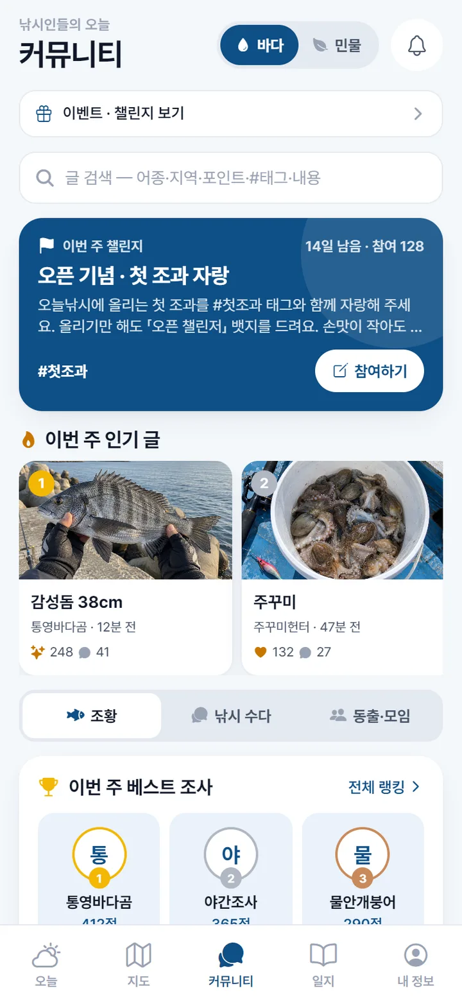
오늘 가도 될지 점수로 알려 주고, 어종별 1분 영상으로 잡는 법까지 알려 드려요. 바다도 민물도 하나면 돼요.
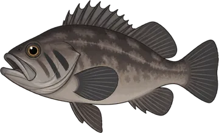
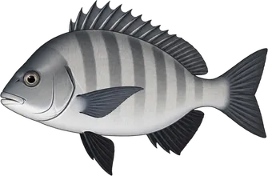
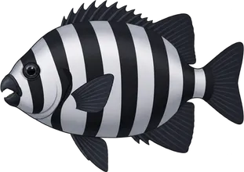
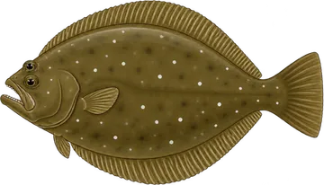
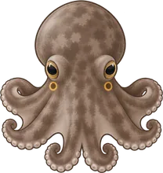
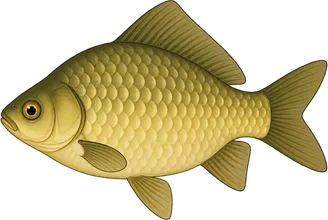
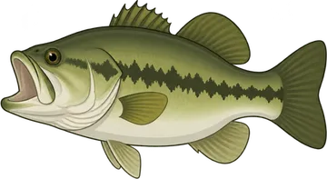
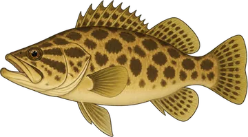
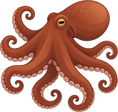
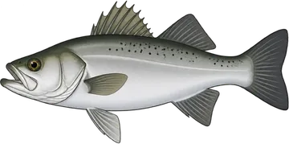
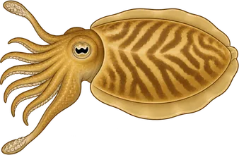
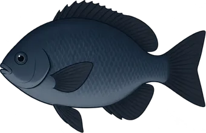
출조 점수
물때와 파고, 바람, 기온, 비 소식을 모아 내 포인트의 오늘 점수와 가장 좋은 시간대를 보여 드려요. 점수를 누르면 왜 그 점수인지도 알려 드려요.
바람 5m/s, 파도 낮음 0.3m, 들물 흐름 좋음
왜 75점일까요
오늘은 17:00~19:00가 가장 좋아 보여요
예시 화면이에요. 실제 점수는 앱에서 포인트마다 계산해요.
우럭부터 붕어까지 95편. 사는 곳, 미끼, 채비, 입질 받는 법만 골라 담았어요.
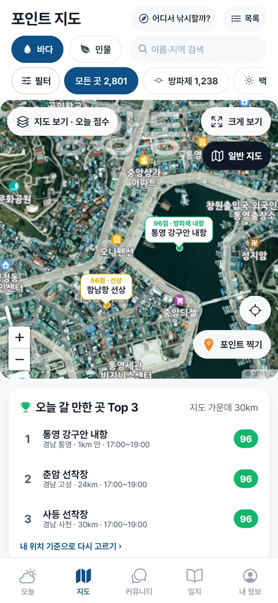
방파제부터 저수지, 유료 낚시터까지 찾고, 위성 사진으로 지형을 미리 봐요.
버튼 하나로 바꿔요. 갯바위 모양과 주차할 곳이 사진으로 보여요.
방파제, 갯바위, 선상, 저수지, 계곡, 유료터까지 나눠서 찾아요.
잡고 싶은 물고기를 고르면 그 어종이 나오는 포인트만 보여 줘요.
방갈로, 야간낚시, 가족 추천, 주차장처럼 원하는 조건으로 걸러요.
날씨와 최근 7일 조황으로 내 주변에서 지금 좋은 곳을 골라 드려요.
출입통제구역 안이나 근처면 미리 알려 드려요.
어종 도감 99종
생김새와 제철, 낚는 법을 정리했어요. 금지체장과 금어기는 법령 원문으로 확인했어요.
금지체장과 금어기는 지자체 조례에 따라 더 엄격할 수 있어요. 출조 전에 지역 고시도 확인해 주세요. 어종별 금지체장·금어기 표 보기
지역과 포인트별 최근 조황을 보고, 장비와 채비를 묻고 답해요. 동출 게시판에서 함께 갈 사람도 찾아요.

앱 카메라로 찍은 조과를 인증하면 점수가 쌓이고 주간·월간 랭킹에 올라요.
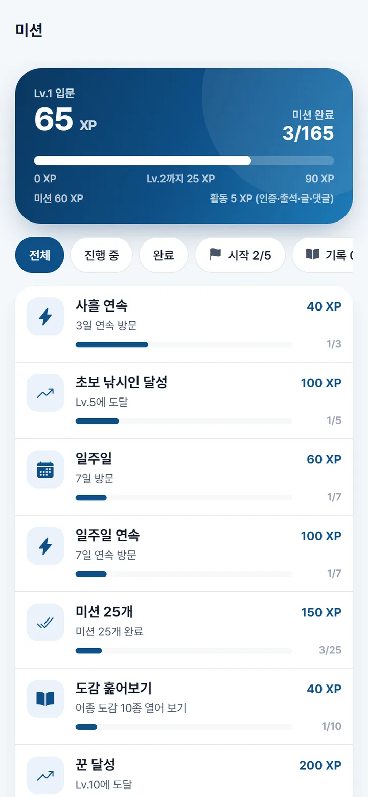
처음 잡은 날부터 전설로 남을 날까지, 낚시 기록이 뱃지로 쌓여요.
앱을 열기만 하면 도장이 찍혀요. 7일, 30일, 365일 연속이면 출석 뱃지가 따라와요.
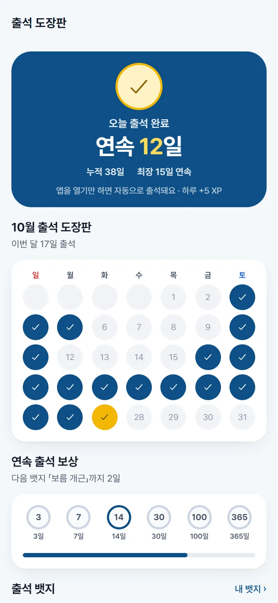
자주 묻는 질문
물때·날씨·파고·조황을 한 번에 보고, 오늘 출조해도 될지 점수로 알려 주는 낚시 앱이에요. 바다와 민물을 모두 다루고, 포인트 지도 7천여 곳, 어종 도감 99종, 어종별 1분 낚시 영상 95편, 조과 일지와 커뮤니티가 들어 있어요.
지금은 구글 플레이 정식 출시를 준비하면서 안드로이드 베타 테스터를 모집하고 있어요. 아이폰 버전은 안드로이드 출시 다음에 준비할 예정이에요. 베타 신청은 onulfish.com/beta 에서 할 수 있어요.
고른 포인트의 물때와 만조·간조 시각, 파고, 바람, 기온, 비 소식을 모아 오늘 점수와 가장 좋은 시간대를 보여 줘요. 바다 포인트는 파고와 바람을, 민물 포인트는 기온과 비를 더 무겁게 봐요. 점수는 참고용이라 출조 전에는 현장 기상을 꼭 다시 확인해 주세요.
바닷물이 들어오고 빠지는 흐름이에요. 바닷물은 하루에 두 번 들어왔다가 두 번 빠지고, 가장 높이 찬 때를 만조, 가장 많이 빠진 때를 간조라고 해요. 만조와 간조 시간은 매일 50분쯤씩 늦어져서 날마다 확인해야 해요.
안 돼요. 법령 문구가 'N센티미터 이하' 포획 금지라서, 기준과 같거나 작으면 놓아줘야 하고 기준을 넘어야 가져갈 수 있어요. 길이는 보통 주둥이 끝부터 꼬리 끝까지(전장) 재요.
안 돼요. 배스와 블루길은 생물다양성법으로 정한 생태계교란 생물이라, 낚시로 잡는 건 괜찮지만 살아 있는 채로 다시 놓아주면 금지된 방사에 해당해요(법제처 법령해석 18-0488). 살아 있는 채로 옮기거나 키우는 것도 안 돼요.
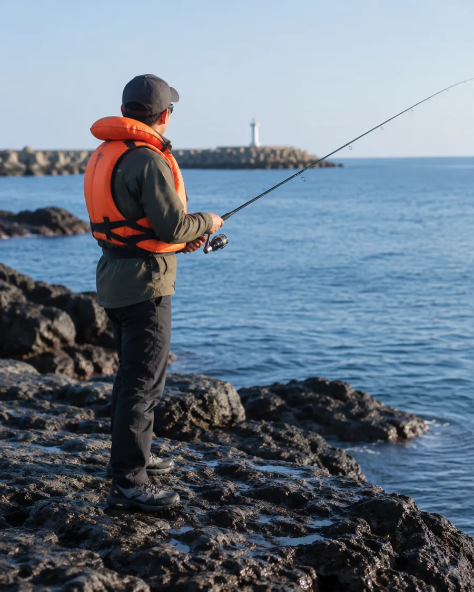
날씨와 물때 정보는 참고용이에요. 출조 전에 현장 기상과 안전 정보를 꼭 다시 확인해 주세요.
지금 출시 준비 중이에요. 아이폰 버전은 그다음에 찾아갈게요.